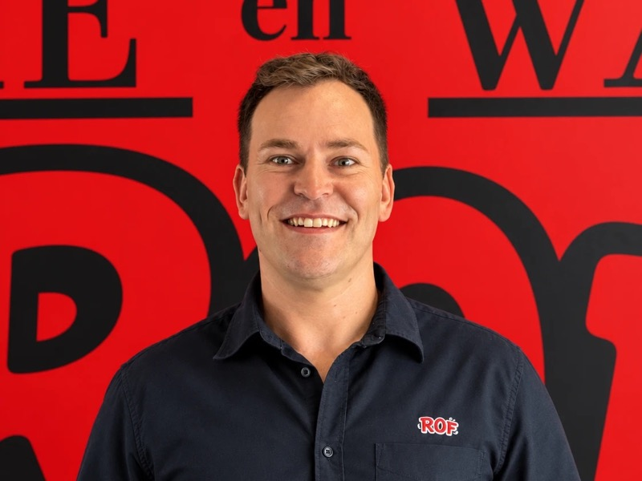
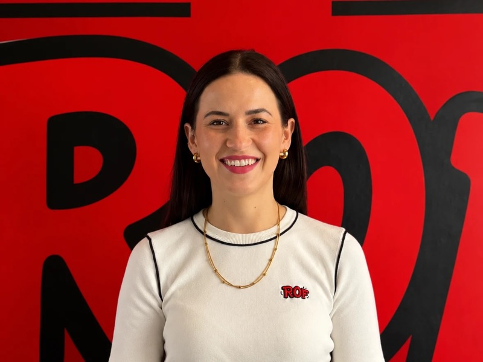
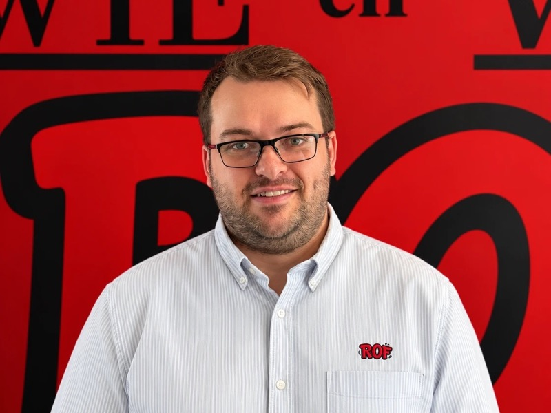
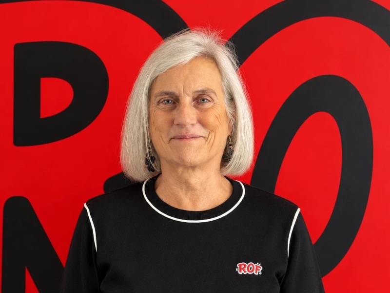

Charl Bloomberg
Uitvoerende Hoof (CEO)
Rapport Onderwysfonds (ROF) is 'n nie-winsgewende organisasie (NPO 041-391) wat tersiêre onderwysstudente finansieel bystaan met leningsbeurse. Die fonds bestaan al sedert November 2003 en het oor die jare reeds duisende studente gehelp om hul droom om 'n onderwyser te word, te bewaarheid. Daar word jaarliks meer as 750 aansoeke ontvang, met ongeveer 500 wat vir 'n leningsbeurs kwalifiseer.
ROF is Suid-Afrika se enigste Afrikaanse Onderwysfonds wat in toekomstige onderwysers belê — met meer as 2 dekades se ervaring en 'n volhoubare befondsingsmodel wat 'n blywende opvoedkundige impak het.
ROF gestig as nie-winsgewende weldaadsorganisasie
Duisende studente ondersteun; 750+ aansoeke jaarliks ontvang
ROF vier 20 jaar se ondersteuning, uitbreiding en ontwikkeling van die Afrikaanse onderwyssektor.
ROF se impak en bydrae tot Afrikaanse Onderwys, en bemagtiging van Afrikaanse onderwysers is groter as ooit.



